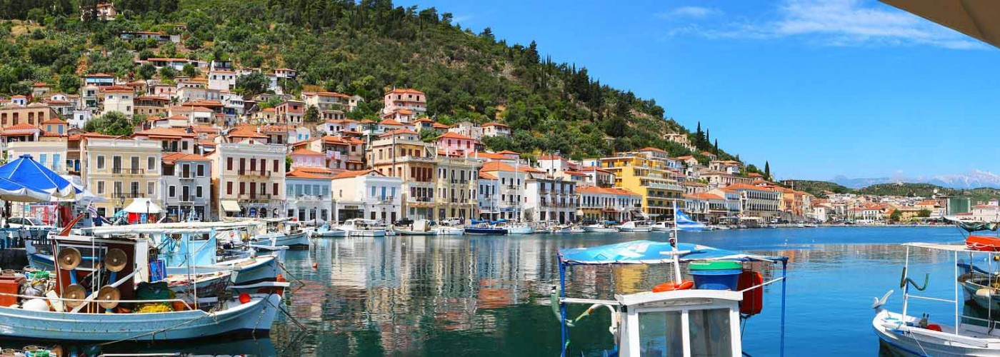
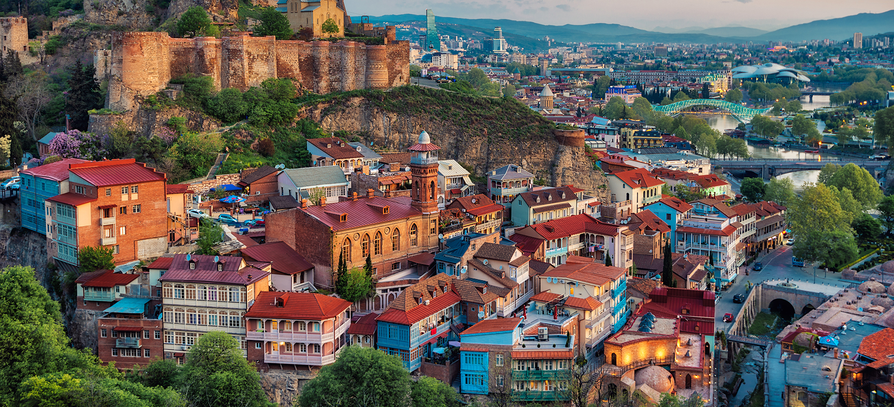
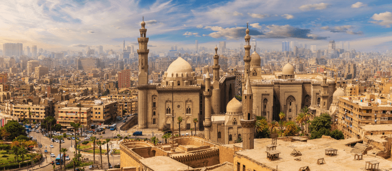
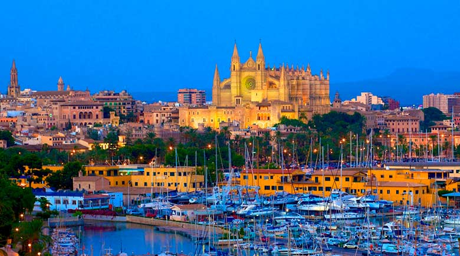
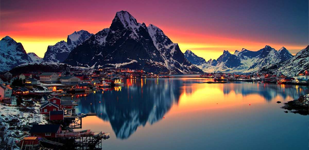
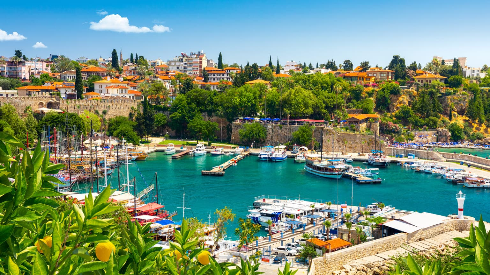
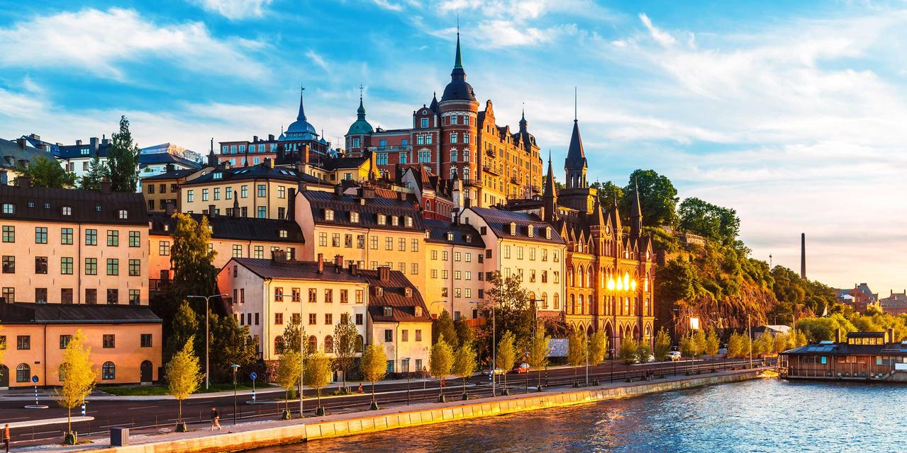
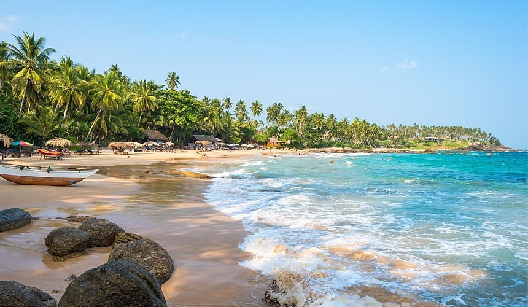
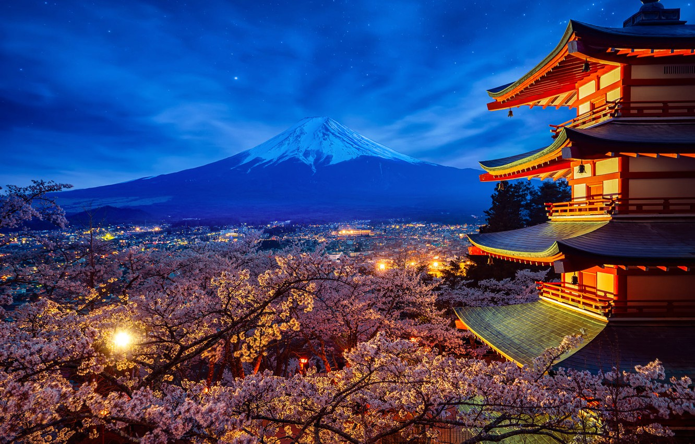

Памятка Туриста
Германия
Германия поражает путешественников продуманным комфортом, красотой пейзажей и великолепными достопримечательностями. Здесь можно остановиться в самом современном сетевом отеле или устроиться в уютном семейном пансионе, прогуляться по старинным университетам и замкам или посетить выставки новейших достижений науки, наведаться в великолепные медицинские центры или отправиться изучать успехи немецких виноградарей. Отдых в Германии всегда полон ярких впечатлений. Огромный выбор туров в Германию позволит познакомиться с богатой культурой страны поближе. Горнолыжные и пляжные курорты не дадут заскучать туристам ни зимой, ни летом.

- Столица: Берлин
- Официальный язык: немецкий
- Валюта: евро
- Климат: умеренный, переходный от морского к континентальному
- Время: летом отстает от московского на 1 час, зимой на 2 часа
- Перелет из Москвы: ~3 часа
- Телефонный код: +49
Греция
Греция - это не только страна оливок, голубого моря с белым песком и солнца, которое светит здесь 300 дней в году, - это самая неповторимая страна в мире. В Греции самая длинная береговая линия в Европе - более 13,5 тыс. км. Мягкий климат, обширная экскурсионная программа, потрясающая природа являются значимыми факторами при выборе тура в Грецию. Особое внимание стоит обратить на островные курорты: Крит, Корфу, Родос, Санторини, Миконос, Кос, также на полуостров Пелопоннес, город-столицу - Афины и на главное курортное место материковой Греции полуостров Халкидики - такие разные направления, но всё это Греция. Мы тщательно выбираем отели и курорты для вашего отдыха и поможем сделать ваше путешествие по-настоящему незабываемым.
- Столица:Афины
- Официальный язык:греческий
- Валюта: евро
- Климат: субтропический и умеренный
- Время: летом совпадает с московским, зимой отстает от московского на 1 час
- Перелет из Москвы: ~3,5 часа
- Телефонный код: +30
Грузия
Удивительная, щедрая страна Грузия во все времена привлекала исследователей и туристов своим неповторимым колоритом, богатой тысячелетней историей, разнообразной природой и древнейшими традициями. Территория Грузии это местность с множеством исторических и архитектурных памятников, древних монастырей, остатками замков и крепостей, оборонительных сооружений. Здесь легко и просто совмещать любой отдых, познавательные экскурсии по Грузии с получением впечатлений и наслаждения от созерцания горных пейзажей и природных ландшафтов. А грузинское гостеприимство, местные вина и грузинская кухня известны далеко за пределами Грузии.
- Столица: Тбилиси
- Официальный язык: грузинский
- Валюта: грузинский лари
- Климат: дождливый влажный субтропический климат
- Время: совпадает с московским временем и опережает минское время на 1 час.
- Перелет из Москвы: ~3 часа
- Телефонный код: +995
Египет
Эта древняя страна с богатыми культурными традициями и развитой туристической инфраструктурой привлекает путешественников со всего мира. В Египте можно отдыхать круглый год, но самое "пиковое" время - Новый год и рождественские каникулы. Отдых в Египте - это великолепная Хургада, популярный Шарм-эль-Шейх, Эль Гуна, которую называют египетской Венецией, климатический санаторий Сафага, Макади Бей, полюбившийся дайверам Дахаб, Таба - Египет был и остается страной самого недорогого массового пляжного отдыха. В Египет, на побережье Красного моря, "слетаются" серферы и дайверы: одни ловят волну, другие погружаются под воду - полюбоваться кораллами. Прекрасный климат, теплое море, широкие песчаные пляжи, качественные отели, разнообразные экскурсии, бьющая через край экзотика - все это делает отдых в Египте незабываемым: сюда хочется вернуться вновь и вновь.
- Столица: Каир
- Официальный язык: арабский
- Валюта: египетский фунт
- Климат: субтропический и тропический пустынный
- Время: отстает от московского на 1 час
- Перелет из Москвы: от 6 часов
- Телефонный код: +20
Испания
Мягкий средиземноморский климат, высочайший уровень развития туристической индустрии, множество исторических памятников, изобилие морепродуктов, фруктов и овощей - все это делает Испанию излюбленным местом отдыха для туристов со всего мира. Поэтому все отели Испании комфортабельные, с удобным подходом к морю. Выбор размещения разнообразен - от отелей с мини-кухней без питания до гостиниц, работающих по системе "все включено". Такие отели - то, что надо для красивого, но не слишком разорительного отдыха. Самая богатая область Испании - Каталония - одна из 17 составляющих это государство автономных областей, располагается в северо-восточной части Пиренейского полуострова. Каталония - великолепное место для отдыха, предлагающая своим гостям уникальное сочетание прекрасных и ухоженных пляжей, развитой туристической инфраструктуры, живописных ландшафтов и богатой истории.
- Столица: Мадрид
- Официальный язык: испанский
- Валюта: евро
- Климат: субтропический
- Время: летом отстает от московского на 1 час (2 на Канарах), зимой на 2 часа (3 на Канарах)
- Перелет из Москвы: в Барселону: ~4,5 часа, на Тенерифе: ~7 часов, на Майорку ~5 часов
- Телефонный код: +34
Норвегия
Страна контрастов и острых ощущений. Здесь величественные горы нависают над таинственными фьордами; суровую зиму нередко сменяет роскошное лето; а долгие полярные ночи уступают место белым ночам. Эта страна позволит путешественнику вкусить и традиционного уклада жизни, и благ современной цивилизации, и природных красот, и городских удовольствий. Норвегия, известная преимущественно своими природными красотами, богата еще историей и культурной жизнью. Летом здесь происходит много событий, связанных с природой и культурой, включая праздники и концерты под открытым небом среди живописных мест. Зима предлагает свои развлечения, от лыж и иных спортивных забав до рождественских ярмарок и такого зрелища, как северное сияние
- Столица: Осло
- Официальный язык: норвежский язык (букмол)
- Валюта: норвежская крона
- Климат: континентальный, субарктический
- Время: отстает от московского на 2 часа
- Перелет из Москвы: минимум 2,5 часа
- Телефонный код: +47
Турция
Турции вас ждут яркие и незабываемые каникулы. На курортах страны Вы найдёте все, что нужно для отличного отдыха: теплое море и ласковое солнце, интересные экскурсии и большой выбор современных отелей, гостеприимство, отточенное тысячелетиями и самые современные туристические новинки. Путевки в Турцию популярны во всем мире, а большое разнообразие цен позволит всем путешественникам найти свое место на пляже. Вы можете отправиться отдыхать на неделю или две на Анталийское побережье, уехать в экскурсионный тур в Стамбул или два месяца отдыхать на курортах Эгейского моря. Воспользуйтесь системой подбора тура и выберите свой отдых!
- Столица: Анкара
- Официальный язык: турецкий
- Валюта: турецкая лира
- Климат: умеренный и субтропический
- Время: совпадает с московским
- Перелет из Москвы: ~5 часов
- Телефонный код: +90
Швеция
Швеция слишком разнообразна и богата контрастами, чтобы выразить впечатления одним словом. И нечего удивляться различиям между южной частью Швеции, почти ничем не отличающейся от остальной континентальной Европы, и ее севером - засыпанной снегами Лапландии. В Швеции есть все: и оживленные города, и россыпи деревянных домиков, как правило окрашенных в красный цвет, и водоемы, то пресные, то соленые, и бурные порожистые реки, и сонные озера. и острова, и шхеры в виде тысяч и тысяч веснушек на поверхности моря, и высокие горы, и прелестные долины.
- Столица: Стокгольм
- Официальный язык: испанский
- Валюта: шведская крона
- Климат: континентальный умеренный
- Время: отстает от московского на 2 часа
- Перелет из Москвы: ~2 часа
- Телефонный код: +46
Шри-Ланка
Если вы отправитесь на отдых в тур на Шри-Ланку, вас поразят великолепные песчаные пляжи и пальмы, склонившиеся к теплым водам Индийского океана, просторные долины и живописные водопады, широкие реки и буйные тропические леса, богатейшая экзотическая флора и фауна - все это служит достойным фоном для величавых руин древних городов, свидетелей тысячелетней истории и культуры острова. Нельзя не отметить, что отдых в Коломбо делается еще более приятным из-за дружелюбия и гостеприимства всегда приветливых ланкийцев, что дополняет чарующую красоту острова с загадочным названием Шри-Ланка.
- Столица: Шри-Джаяварденепура-Котте
- Официальный язык: сингальский и тамильский
- Валюта: ланкийская рупия
- Климат: субэкваториальный
- Время: опережает московское на 2,5 часа
- Перелет из Москвы: от 8,5 часов
- Телефонный код: +94
Япония
Многовековая изоляция страны от всего цивилизованного мира послужила развитию уникальной, во многих отношениях неповторимой культуры, со своим укладом, своими философскими учениями, эстетическими и религиозными обычаями. Островное расположение Японии, ее климатические и природный особенности, в сочетании с богатым историческим наследием, стремительным экономическим и индустриальным ростом, привлекают исследователей и туристов со всего мира, начиная со второй половины прошлого столетия.
- Столица: Токио
- Официальный язык: японский
- Валюта: японская йена
- Климат: от субтропического на юго-западе до холодного зимнего на севере
- Время: опережает московское на 6 часов
- Перелет из Москвы: ~9,5 часов
- Телефонный код: +81

- Проверьте наличие следующих документов:
- заграничный паспорт
- ваучер
- страховой полис
- авиабилет
- при необходимости нотариально оформленное согласие на выезд ребенка, свидетельство о рождении

- Загляните в ваш авиабилет и проверьте аэропорт и время вылета
- Не забудьте ознакомиться с правилами проведения предполетного и послеполетного досмотров.

-
Внимательно прочтите правила страхования на страховом полисе
- Страховой полис рекомендуется всегда носить с собой. Ознакомьтесь с Памяткой застрахованного, которая даст вам общее представление о системе медицинского страхования за границей.

- Последний совет — улыбайтесь и выучите хотя бы несколько распространённых слов вроде «здравствуйте», «спасибо», «пожалуйста» – это облегчит вам пребывание за границей.
Bazz Tour - международный туроператор. Мы работаем в такими странаx, как Греция, Египет, Испания, Италия, Кипр, ОАЭ (Объединенные Арабские Эмираты), Таиланд, Франция.
Информация, указанная на сайте, не всегда является правдой; все совпадения с реальными турами, экскурсиями и курортами случайны (наверное).
Not Marcy
JanusZweitesGesicht
Лёша Ntroll akypacu
mihail Sinor Seller